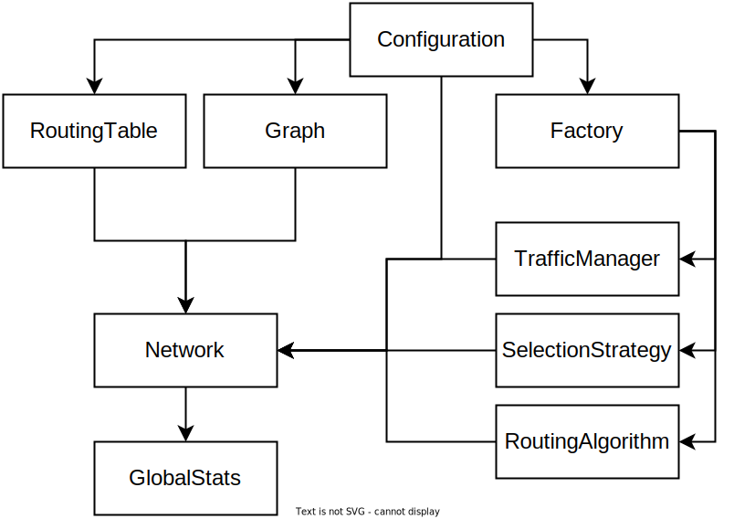
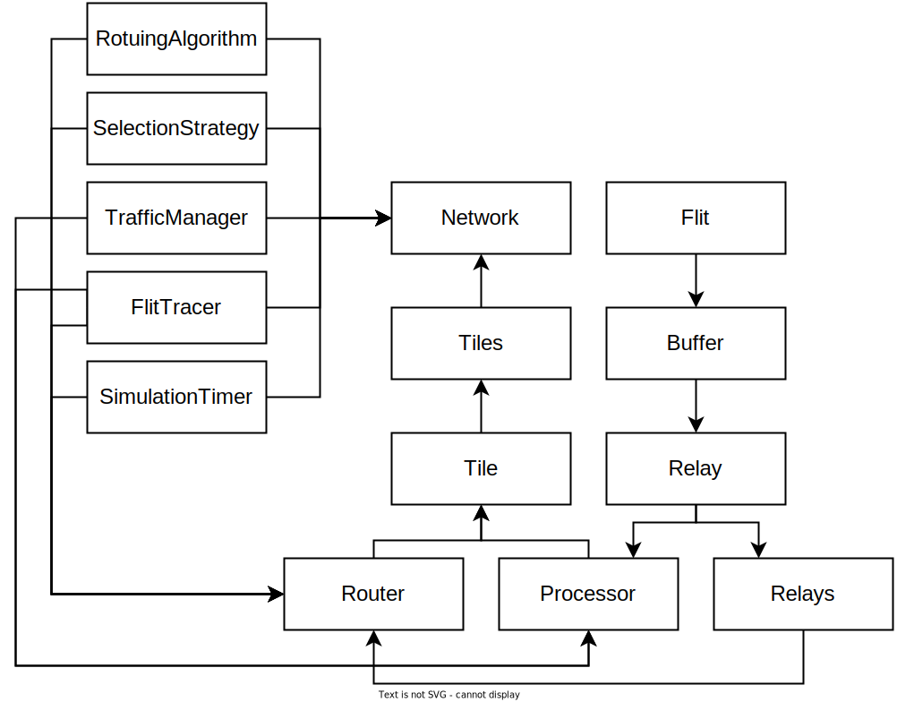

Introduction
The given software provides modeling functionality for networks on chip with custom topology, routing algorithm and selection strategy. There is simple programming interface for introducing new modeling capabilities. The project was originally inspired by the Noxim, but the goal of flexibility led to complete rework of the whole simulator. Modeling of signals is driven by the SystemC library which allows cycle accurate communication between components of the network. The main purpose of development was to create universal toolset for high level modeling, evaluation and comparison of different network topologies. Such properties as performance and ease of modifications became the basis of the Newxim.
Basic terms
Simulator
Software, which provides tooling for modeling and aggregation of metrics from the network and routing algorithms.
Modeling
Process of communications inside network with preconfigured parameters.
Topology
Graph which describes nodes and links of the network.
Routing algorithm
Algorithm for computing next possible destination nodes for the packet without taking into consideration current state of the network.
Selection strategy
Algorithm for selecting single destination from the array, provided by routing algorithm. It is possible to use current state of the network in selection process.
Processor
Unit which acts as source or destination for each packet.
Router
Operational node of the network used to route the packets.
Relay
Port of the router which must be connected to relay of another router to form link.
Topology channel
Physical links between nodes.
Virtual channel
Virtual link created inside physical link.
Newxim simulator features
Simulator was built to bring maximum extencibility. Most of it's components can be extended via simple modifications. Due to performance and simplification reasons, all modifications must be done in source code because scripting languages drastically harm simulation time.
Built-in features:
- Fully customizable network topology
- A lot of implemented routing algorithms
- Various selection strategies
- Configurable traffic distribution
- Custom simulation parameters
- Expressive configurable metrics
User manual
Software is provided as CLI. The only purpose of it is to simulate network with given parameters. Simulation is single threaded, but in most cases, you will require multiple of them, so you are able to run as many parallel instances as you want. All automatizations are done with other modules such as [NewximManager]. There are two ways of configuring simulation process. With config file or via command line arguments. Due to higher priority of command line arguments, any file configuration can be overwritten on program startup. Config file (by default “config.yml” and can be set via -config command line option) must be in yaml format and contains network, simulation and metrics properties.
Command line arguments
Each config option have dedicatied command line argument.
To override option, just pass -<config option name> <config option value>
For example: -topology CIRCULANT -packet_injection_rate 0.2
Config file
Config file consists of 6 sections:
- Topology parameters
- Routers configuration
- Algorithms configuration
- Simulation parameters
- Metrics options
Each section describes corresponding properties. During simulator startup config is loaded and all fields are validated. So, any invalid configuration will result in error message, describing the mistake.
Topology parameters
1. Topology configuration
topology: <type>
Possible values:
CIRCULANT - circulant topology
topology_args: [N, G1, G2, …]
N - number of nodes
Gk - generators of the circulant
MESH - mesh topology
topology_args: [W, H]
W - number of nodes horizontally
H - number of nodes vertically
TORUS - torus topology
topology_args: [W, H]
W - number of nodes horizontally
H - number of nodes vertically
TREE - tree topology
topology_args: [N, C]
N - number of nodes
C - maximum number of child nodes
CUSTOM - custom topology
topology_args: [
[N00, N01, ...],
[N10, N11, ...],
...
]
Nab - index of node b which is connected to node a
2. Number of physically allocated channels
topology_channels: <count>
3. Number of virtually allocated channels
virtual_channels: <count>
4. Subtopology type
Type of subtopology, generated for main graph. It is used as workaround paths for stuck packets.
subtopology: <type>
NONE - no subtopology
TREE - spanning tree with minimum possible Wiener index
5. Subnetwork links allocation type
subnetwork: <type>
NONE - no subnetwork
VIRTUAL - virtually allocated links
PHYSICAL - physically allocated links
Routers configuration
1. Order of port buffers update
update_sequence: <type>
DEFAULT - rund-robin update order
[P1, P2, ...] - fixed update order of ports
2. Number of flit slots per buffer
buffer_depth: <depth>
3. Minimum length in flits of generated packets
min_packet_size: <size>
4. Maximum length in flits of generated packets
max_packet_size: <size>
5. Controls injection rate in number of flits instead of packets
flit_injection_rate: <true/false>
6. Controls scaling of generated packets / flits with number of nodes
scale_with_nodes: <true/false>
7. Probability of packet / flit generation for node per every simulation iteration
packet_injection_rate: <rate>
Algorithms configuration
1. Routing algorithm selection
routing_algorithm: <type>
TABLE_BASED - table based routing
MESH_XY - XY routing algorithm for mesh
MESH_WEST_FIRST - West First algorithm for mesh
MESH_O1TURN - O1TURN algorithm for mesh
MESH_XY_YX - XY-YX algorithm for mesh
MESH_NEGATIVE_FIRST - Negative First algorithm for mesh
MESH_NORTH_LAST - North Last algorithm for mesh
MESH_ODD_EVEN - Odd-Even algorithm for mesh
TORUS_CLUE - CLUE algorithm for torues
SUBNETWORK - table based algorithm which also uses physical subnetwork with permission for packets to leave subnetwork
FIXED_SUBNETWORK - table based algorithm which also uses physical subnetwork without permission for packets to leave subnetwork
VIRTUAL_SUBNETWORK - table based algorithm which also uses virtual subnetwork with permission for packets to leave subnetwork
FIT_VIRTUAL_SUBNETWORK - table based algorithm which also uses virtual subnetwork without permission for packets to leave subnetwork and buffers load control
2. Strategy of selecting one of ports and virtual channels provided by the routing algorithm
selection_strategy: <type>
RANDOM - random port selection
BUFFER_LEVEL - less loaded port selection
KEEP_SPACE - less loaded port selection with control of network load
RANDOM_KEEP_SPACE - random port selection with control of network load
CIRCULANT_RING_SPLIT - ring-split selection strategy for circulants
CIRCULANT_VIRTUAL_RING_SPLIT - ring-split selection strategy with virtual channels for circulants
3. Routing table configuration
routing_table: <type>
DIJKSTRA - routing table is based on Dijkstra algorithm
UP_DOWN - routing table is based on up-down algorithm
MESH_XY - routing table is based on XY algorithm for mesh
CIRCULANT_PAIR_EXCHANGE - routing table is based on pair-exchange algorithm for circulant
CIRCULANT_MULTIPLICATIVE - routing table is based on routing algorithm for multiplicative cicrulant
CIRCULANT_CLOCKWISE - routing table is based on clockwise algorithm for circulant
GREEDY_PROMOTION - routing table is based on greedy promotion algorithm
[...] - just routing table
Custom routing table format
[
[X, Y, Z, [A, B, C], ...],
[U, V, W, ...]
...
]
Each row in table corresponds to one router. Each value in that row represents port or id of the router (or array of those) in which packet must be sent on routing stage.
4. Routing table format
routing_table_id_based: <true/false>
5. Type of traffic distribution
traffic_distribution: <type>
TRAFFIC_RANDOM - random traffic distribution
TRAFFIC_HOTSPOT - hotspot traffic distribution
TRAFFIC_TABLE_BASED - traffic distribution based on table from file
6. Configuration of hotspots
traffic_hotspots: [[N, S, R], ...]
N - node index
S - send probability multiplier
R - receive probability multiplier
7. Traffic table file path
traffic_table_filename: <path>
Simulation parameters
1. Simulation random seed
rnd_generator_seed: <seed>
2. Duration of simulation cycle in ps
clock_period_ps: <count>
3. Duration of reset signal in cycles
reset_time: <count>
4. Duration of simulation in cycles
simulation_time: <count>
5. Duration of processors flits production in cycles
production_time: <count>
6. Duration of the period which is ignored in stats accumulation in cycles
stats_warm_up_time: <count>
Metrics options
1. Report simulation progress as progress bar
report_progress: <true/false>
2. Report simulation result as JSON
json_result: <true/false>
3. Report simulation topology graph
report_topology_graph: <true/false>
4. Report simulation topology graph adjency matrix
report_topology_graph_adjacency_matrix: <true/false>
5. Report simulation routing table
report_routing_table: <true/false>
6. Report simulation topology subgraph
report_topology_sub_graph: <true/false>
7. Report simulation topology subgraph adjency matrix
report_topology_sub_graph_adjacency_matrix: <true/false>
8. Report simulatio subnetwork routing table
report_sub_routing_table: <true/false>
9. Report possible routes inside given topology
report_possible_routes: <true/false>
10. Report some stats for possible routes
report_routes_stats: <true/false>
11. Report metrics for each cycle
report_cycle_result: <true/false>
12. Report traces for flits
report_flit_trace: <true/false>
13. Report buffer statuses after simulation
report_buffers: <true/false>
14. Report distribution of sent/received flits among processors
report_distribution: <true/false>
Simulation output
Simulation output depends on configuration file. Basically, it consists of general metrics section and configurable sections. General metrics can be shown in json or plain text format.
General metrics
-
Total produced flits
The number of flits produced by projessors during the simulation -
Total accepted flits
The number of flits received in the network from processors during the simulation -
Total received flits
The number of flits received by processors during the simulation -
Network production (flits/cycle)
Average number of flits produced by processors per cycle -
Network acceptance (flits/cycle)
Average number of flits received in the network from processors per cycle -
Network throughput (flits/cycle)
Average number of flits delivered by the network to processors per cycle -
IP throughput (flits/cycle/IP)
Average number of flits delivered by the network to each processor per cycle -
Last time flit received (cycles)
Last cycle where any of flits was received by any of processors -
Max buffer stuck delay (cycles)
Maximum time in cycles between pulling outs of flits from any of buffers -
Max time flit in network (cycles)
Maximum time in cycles flit took to be delivered -
Total received packets
The number of complete packets, received by processors during the simulation -
Total flits lost
The number of flits, lost in network (should be zero if simulation is working correctly) -
Global average delay (cycles)
Average delay in cycles between packet creation and consumption -
Max delay (cycles)
Maximum delay in cycles between packet creation and consumption -
Average buffer utilization:
Average flit slots utilized among all buffers and cycles
Configurable sections
-
Flit trace
Reports path of each flit through the network -
Buffer statuses
Reports metrics for each buffer and flits left in them before the simulation ended -
Flits distribution
Reports number of sent and received flits for each processor
Developer manual
The power of Newxim is in it's extencibility, performance and structure. This section is dedicated to description of simulator concepts and code structure. It also reveals the process of modifications. Because of requirenment to introduce all modifications via source code, this process may look complicated. Example implementations of some algorithms are provided to help understand it`s basics.
Project structure
Source code organization follows area of responsibility for components.
Project directories tree:
- src # source code files
- Configuration # classes for initial simulator configuration
- Graph # classes for working with graphs
- TrafficManagers # traffic manager implementations
- Data # basic data structures
- Hardware # hardware elements of the network
- Metrics # metrics aggregation and display
- Routing # routing algorithm implementations
- Selection # selection strategy implementations
General simulator structure
In general, simulator consists of four stages:
- Configuration
- Setup
- RoutingTable
- Graph
- Factory
- TrafficManager
- SelectionStrategy
- RoutingAlgorithm
- Network
- GlobalStats

Those stages are initialized and executed sequentially through the Simulation life cycle and determine the behavior in the following steps.
Configuration stage
During that stage, Configuration class parses the config file and command line arguments.
Then it validates all of the passed parameters to prevent invalid arguments from braking the simulation process.
Every validation is accompanied by special error message, describing valid parameter values.
Setup stage
On the setup
RoutingTable,
Graph
and
Factory
objects are built from configuration.
Graph
object will be used as a network topology, while the
Factory
serves as a provider
of the
TrafficManager,
SelectionStrategy
and
RotuingAlgorithm
instances for
network processors and routers.
Factory
is also used for registering
your own algorithms for configuration.
Network stage
On this stage whole simulation process happens.
Simulation can be described as a state machine.
On each iteration, new simulation state is produced from the current state.
All calculations are done via Update methods bound to the clock signal.
During the simulation most of operational units record some metrics.
Those will be used in the final stage.
GlobalStats stage
On the final step, all collected metrics is processed.
Processed metrics is then printed to the stdout of the program.
Format of the output is described in Simulation output chapter.
Sumulator core structure

Network
class acts as a container for network components.
Network
consists of tiles, each of them is represented as pair of Processor and Router.
Processor
class is responsible for generating network traffic and connected with
Router
through local
Relay.
Processor
is using
TrafficManager
for decisions on packet production per each cycle.
Router
class have an array of
Relays,
connected with other routers and local processor.
Router
operations are determined by
SelectionStrategy
and
SelectionStrategy
instances.
Relay
represents port of the device.
Each
Relay
must be connected with another
Relay.
Relay
have dedicated Flit
Buffer s
with configurable capacity.
Each
Buffer
represents separate virtual channel.
Relays
are used as transfer links for flits.
Flit
is basic unit of packet.
It holds some information about its sender,
current state, destination
Processor
and
Packet section.
Simulation life cycle
When you run program, sc_main entry point is called. It initializes
Configuration
instance and
creates
SimulationTimer,
GlobalStats
and
ProgressBar
objects.
Then it rises reset signal and run simulation for reset time, specified in config.
Next, reset signal is lowered to zero and simulation is run for required time.
When the simulation completes,
GlobalStats
object is serialized to the standard output stream of program.
Each simulation cycle consists of three unordered stages:
-
Flit generation in processors
Each processor asks the traffic manager for permission to spawn packet. If packet should be created, router adds it to the packet queue. Queue is not actually holding every packet instance for memory efficiency. Instead, it just remembers how many packets it should spawn and current generated packet. Current packet is hold until each of its flits are sent. Then, the next packet is generated if it exists in queue. After generating packet, processor checks if it tries to send next flit of the queue to the router. On success flit is removed from queue. -
Flit consumption
Processors check for incoming flits and record statistics on each received one. -
Flits routing
Router loop through each port and tries to calculate the output port. If destination port is available, it reserves source port to destination port and place that record in reservation table. Then, for each record in reservation table flit transmission is performed.
Many operations, such flit consumption and routing records some information to the stats object. After simulation those objects are aggregated in global stats and printed as a result of simulation.
Class description
This chapter contains description for most of classes in the simulator source. It will not get into deep source code details, instead it provides an overview of classes, their roles and methods.
Configuration classes
The following classes are mostly used during configuration stage. They are responsible for config parsing and instantiation of simulator modules.
Configuration
Configuration class object is used as a container of the simulation parameters.
It is passed throug most other classes to provide them access to rules of their behaviour.
Constructor
Configuration(std::int32_t arg_num, char* arg_vet[])
Accepts command line arguments number and array of strings, representing passed arguments. Used to initialize whole simulator configuration from command line arguments and configuration file.
Method
void ParseArgs(YAML::Node &node, std::int32_t arg_num, char* arg_vet[])
- Accepts root yaml node, command line arguments number and array of strings, representing passed arguments.
- Used to override existing configuration, initialized from file with command line arguments.
Method
void ReadTopologyParams(const YAML::Node& config)
- Accepts root yaml node
- Used to read topology parameters from yaml root node.
Method
void ReadRouterParams(const YAML::Node& config)
- Accepts root yaml node
- Used to read router parameters from yaml root node.
Method
void ReadRoutingTableParams(const YAML::Node& config)
- Accepts root yaml node
- Used to read routing table parameters from yaml root node.
Method
void ReadSimulationParams(const YAML::Node& config)
- Accepts root yaml node
- Used to read simulation parameters from yaml root node.
Method
void ReadTrafficDistributionParams(const YAML::Node& config)
- Accepts root yaml node
- Used to read traffic distribution parameters from yaml root node.
Graph
Extends std::vector<GraphNode> and provides some methods for calculation of subgraph and path searching.
Child classes <name>Graph provide constructors for the graph of given topology.
GraphNode
Extends std::vector<std::int32_t>, stores indices of nodes, connected to it.
Method
void push_back(std::int32_t id, std::int32_t ch = 1)
- Accepts node index and the number of required physical connections.
- Used to connect current node with node at specified index.
Method
std::vector<std::int32_t> links_to(std::int32_t id)
- Accepts node index.
- Returns indices of the links (corresponding to router ports) to specified node.
TrafficManager
Abstract class, used as base class for traffic manager implementations.
Abstract method
bool FirePacket(std::int32_t from, double time)
Implementation must decide if packet should be fired from processor with given index at given time.
Abstract method
std::int32_t FindDestination(std::int32_t from)
Implementation must provide selection of the destination node index from the given node index.
RoutingTable
Stores routing table for the simulation as 3D array. First index is a source node, second index is a destination node, third index is a variant of next node.
Constructor
RoutingTable()
Creates empty instance of routing table.
Methods
bool Load<name>(const Graph& graph)
Generate routing table from graph with specified algorithm.
Method
void Adjust(const Graph &src_graph, const Graph &dst_graph)
Adjust routing table from src_graph to dst_graph. Can be used to make child routing table from existing one for src_graph. Works only if dst_graph is subgraph for src_graph.
Method
void Promote(const Graph &graph)
Promote routing table indices upper on size of each node from the given graph. Can be used for combining routing tables of two merged graphs.
Factory
Constructor
Factory(const Configuration& cfg)
Accepts constant reference to configuration
Method
std::unique_ptr<RoutingAlgorithm> MakeAlgorithm() const
Returns instance of routing algorithm corresponding to the name specified in the configuration.
Method
std::unique_ptr<SelectionStrategy> MakeStrategy() const;
Returns instance of selection strategy corresponding to the name specified in the configuration.
Method
std::unique_ptr<TrafficManager> MakeTraffic() const;
Returns instance of traffic manager corresponding to the name specified in the configuration.
Data classes
Data classes provide some structures used in network.
FlitType
Enum representing the type of flit. It is used as flag, so each flit can have several types.
Possible values
None- should be never usedHead- leading flit of the packetBody- body (or data) flit of the packetTail- closing flit of the packet
Flit
Storage class (struct) used to represent flit instance for the simulation.
Field
std::uint64_t id
Global unique id of flit.
Filed
int src_id
Id of the source node.
Field
int dst_id
Id of the destination node.
Field
int port_in
Number of router port flit came in (changes on each hop).
Field
int port_out
Number of router port flit came from (changes on each hop).
Field
int vc_id
Id of current flit`s virtual channel.
Field
FlitType flit_type
Type of the flit.
Can be one or several of: None, Head, Body, Tail
Field
int sequence_no
Sequence number of flit in packet.
Field
int sequence_length
Total number of flits in parent packet.
Field
double timestamp = -1
Timestamp of flit creation.
Field
double accept_timestamp
Timestamp of flit injection into network.
Field
int hop_no
Current number of hops (increments on each hop).
Packet
Storage class (struct) used to represent packet instance for the simulation.
Field
std::int32_t src_id
ID of the source node
Field
std::int32_t dst_id
ID of the destination node
Field
std::int32_t vc_id
ID of the virtual channel
Field
double timestamp
Simulation time of packet creation
Field
std::int32_t size
Number of flits in packet
Field
std::int32_t flit_left
Flits in the packet that are left to send from Processor
Hardware classes
Objects of hardware classes are used for simulation of real network-on-chip hardware components.
Network
Class is used to store all of the network components.
It includes instances of:
Configuration,
RoutingAlgorithm,
SelectionStrategy,
TrafficManager,
FlitTracer,
SimulationTimer,
clock signal, reset signal, array of
Tiles.
Constructor
Network(const Configuration& config, const SimulationTimer& timer, sc_module_name = "NoC")
Initializes constant fields of class and calls InitBase meghod.
Method
void InitBase()
Used for initialization of non-constant class fields,
creation and configuration of Tile instances and
connection of Router instances according
to the given network topology graph.
Tile
Storage class representing couple of Processor and Router
Field
sc_in_clk clock
Clock signal
Field
sc_in<bool> reset
Reset signal
Field
std::unique_ptr<Router> RouterDevice
Unique pointer to Router instance
Field
std::unique_ptr<Processor> ProcessorDevice
Unique pointer to Processor instance
Method
void SetRouter(std::unique_ptr<Router>& router)
Assigns Router instance
Method
void SetProcessor(std::unique_ptr<Processor>& processor)
Assigns Processor instance
Router
Represents main network unit, which is responsible for routing
Flit s over the network.
Method
void Reservation(std::int32_t in_port)
Performs reservation process for given port if it has head
Flit in it.
Method
void Update()
Calls per-cycle update operations.
Method
Connection FindDestination(const Flit& flit)
Computes target connection for given
Flit
via routing algorithm and selection strategy.
Method
bool Route(std::int32_t in_port, Connection dst)
Sends packet from given input port to output port via specified virtual channel.
Method
virtual void TXProcess()
Performs per-cycle transmitting operations.
Processor
Represents processing element of the network. It is used as source or destination for packets.
Method
Packet& GetQueueFront()
Updates first
Packet
if it is required and returns first packet from the
ProcessorQueue.
Method
void ReceiveFlit(Flit flit)
Updates statistics for received Flits.
Method
void SendFlit(Flit flit)
Updates statistics for sent Flits.
Method
Flit NextFlit()
Returns next Flit of current front packet of the ProcessorQueue.
Method
void PopFlit()
Removes
Flit
from the current
Packet.
If there is no
Flits
left in the current Packet,
removes Packet from the ProcessorQueue.
Constructor
Processor(const SimulationTimer& timer, std::int32_t id,
std::int32_t min_packet_size, std::int32_t max_packet_size)
Creates new instance of the Processor.
Method
void SetTrafficManager(const TrafficManager& traffic)
Sets TrafficManager pointer to given instance.
Method
void SetFlitTracer(FlitTracer& tracer)
Sets [FlitTracer] ponter to given tinstance.
Method
void Update()
Performs reset, receive and transmit operations.
Method
void TXProcess()
Performs transmitting operations for current cycle.
Method
void RXProcess()
Performs receiving operations for current cycle.
Relay
Represents port with flit buffers. Must be connected with another relay. Used for transmitting flits between routers and processors.
Method
void SetLocalID(std::int32_t id)
Sets owner Router id for the Relay
Method
void SetVirtualChannels(std::size_t vcs)
Sets number of virtual channels
Method
std::size_t Size()
Returns number of virtual channels
Method
void Bind(Relay& r)
Pairs current Relay with provided one
Method
bool Bound()
Returns true if array is bound to another Relay
Method
void Disable()
Allows to leave Relay unbound (binds it to itself)
Method
void Reset()
Performs reset
Method
void Update()
Performs per-cycle update
Method
bool CanSend(const Flit &flit)
Returns true if Flit can be send
Method
bool CanSend(std::size_t vc)
Returns true if Flit can be send through specified virtual channel
Method
bool Send(Flit flit)
Tries to send Flit. Returns true on success
Method
bool CanReceive()
Returns true if Flit can be received
Method
Flit Receive()
Returns Flit if receive succeed,
otherwise returns invalid Flit instance
Method
std::size_t GetFreeSlots(std::size_t vc)
Returns number of free slots in the Buffer for given virtual channel
Method
Flit Front()
Returns front Flit
from the Buffer of current virtual channel
Method
void Skip()
Skips current virtual channel
Method
Flit Pop()
Removes Flit from the current virtual channel Buffer
Method
Buffer& operator[](std::size_t i)
Overloaded operator for accessing Buffer of specified virtual channel
Buffer
Buffer is used to store Flit s for one virtual channel.
Method
void Reserve(std::size_t bms)
Reserves capacity for the Buffer
Method
std::size_t GetCapacity()
Returns capacity of the Buffer
Method
std::size_t GetFreeSlots()
Returns current number of free slots
Method
bool Full()
Returns true if Buffer is full
Method
bool Empty()
Returns true if Buffer is empty
Method
void Clear()
Clears the Buffer
Method
void Push(const Flit& flit)
Appends Flit to the end of the Buffer
Method
Flit Pop()
Remove and return front Flit from the Buffer
Method
Flit Front()
Returns front Flit from the Buffer
Method
std::int32_t Size()
Returns number of the Flits in the Buffer
Method
double GetOldest()
Returns timestamp of the oldest Flit in the Buffer
Method
double GetOldestAccepted()
Returns accepted timestamp of the oldest Flit in the Buffer
Method
double GetLoad()
Returns the share of Buffer load
ProcessorQueue
This class objects are used as immitation of Processor queue.
Memory economy of it is achieved by not actually storing Packets.
Instead, it just stores numbers, representing sizes, timestamps and
other parameters needed to estimate metrics of actual Packets.
Method
bool UpdateRequired() const
Returns true if update method call required
Method
void UpdateFrontPacket(std::int32_t src_id, std::int32_t dst_id, std::int32_t size)
Updates the front Packet
of the ProcessorQueue
Method
void Push(double time_stamp)
Immitates push of Packet
with specified timestamp to the ProcessorQueue
Method
void Pop()
Immitates pop of Packet
from the ProcessorQueue
Method
Packet& Front()
Returns the current Packet of the ProcessorQueue
Method
bool Empty() const
Retuns true if the ProcessorQueue is empty
Method
std::size_t Size() const
Returns number of the Packets in the ProcessorQueue
ReservationTable
Class objects are used as reservation table for Routers.
Method
void Reserve(Connection dest_in, Connection dest_out)
Reserves the given input to the given output
Method
void Release(Connection dest_in)
Removes bindings for the given input
Method
bool Reserved(Connection dest_in, Connection dest_out) const
Returns true if the given input is bound to the given output
Method
bool Reserved(Connection dest_out) const
Returns true if there is bound Connection instance to the given output
Method
Connection operator[](Connection dest_in) const
Returns instance of the Connection bound to the given input.
If there is no bound Connection, it returns invalid instance.
Method
friend std::ostream& operator<<(std::ostream& os, const ReservationTable& table)
Overloaded output operator to print formatted ReservationTable data
SimulationTimer
Class object provides access to current timestamps in different systems.
Method
double ClockPeriod() const
Returns clock period
Method
double SystemTime() const
Returns timestamp from the start of the simulation including reset time
Method
double SimulationTime() const
Returns timestamp from the start of the simulation excluding reset time
Method
double StatisticsTime() const
Returns timestamp from the start statistics aggregation
Method
double ProductionTime() const
Returns timestamp when production of the
Flits
in the Processors must be stopped
Method
double Progress() const
Returns current simulation progress
Connection
Data class (struct) containing Router port index and virtual channel number.
Field
std::int32_t port = -1
Index of the Router port (Relay)
Field
std::int32_t vc = -1
Number of the virtual channel
Routing classes
Those classes are used as implementations of the routing algorithms.
RoutingAlgorithm
Abstract class used as base class for routing algorithm implementation.
Method
void Route(const Router& router, const Flit& flit, std::vector<Connection>& result)
Implementation must provide an array of
Connections
based on given
Router
and
Flit
instances
Selection classes
Those classes are used as implementations of the selection strategies.
SelectionStrategy
Abstract class used as base class for the selection strategy implementation.
Method
Connection Apply(const Router& router, const Flit& flit, const std::vector<Connection>& directions)
Implementation must select one or none of the given
Connections
based on the
Router
and
Flit
instances
Metrics classes
Metrics classes are used to aggregate and output data during the whole simulation process.
FlitTracer
Class instance is used to trace Flits paths through the network.
Constructor
FlitTracer(const SimulationTimer& timer, double story_start, double story_end)
Initializes new FlitTracer instance
Method
void Register(Flit& flit)
Registers Flit in tracer
Method
void Remember(const Flit& flit, std::int32_t id)
Remembers Flit location
Method
friend std::ostream& operator<<(std::ostream& os, const FlitTracer& tracer)
Overloaded operator to print traces to the output stream
Stats
Class objects are used to local metrics aggregation inside
Routers.
Method
void FlitRouted(const Flit& flit);
Remembers stats for the routed Flit
Method
void FlitReceived(std::int32_t relay, std::int32_t vc);
Remembers stats for the received Router
Method
void StartStuckTimer(std::int32_t relay, std::int32_t vc);
Starts timer for Buffer stuck delay
Method
void StopStuckTimer(std::int32_t relay, std::int32_t vc);
Stops timer for Buffer stuck delay
Method
void PushLoad(std::int32_t relay, std::int32_t vc, double load);
Remembers stats of buffer load
Method
double GetMaxBufferStuckDelay(std::int32_t relay, std::int32_t vc);
Returns maximum stuck delay of the specified Buffer
Method
std::int32_t GetBufferFlitsReceived(std::int32_t relay, std::int32_t vc);
Returns number of flits received by specified Buffer
Method
double GetMaxBufferStuckDelay();
Returns maximum stuck delay among all of the Buffers
Method
double GetAverageBufferLoad(std::int32_t relay, std::int32_t vc) const;
Returns average load of the specified Buffer
Method
double GetAverageBufferLoad() const;
Returns average load among all of the Buffers
Method
std::int32_t GetFlitsRouted() const;
Returns number of the routed Flits
GlobalStats
Class object is used for aggregation of simulation metrics, collected from network instance.
Method
friend std::ostream& operator<<(std::ostream& out, const GlobalStats& gs)
Overloaded operator to print metrics to the output stream
ProgressBar
Class object is used to print current progress of the simulation
Method
void Update()
Updates current progress and prints it to the output stream
Constructor
ProgressBar(sc_module_name, std::ostream& os, const SimulationTimer& network_timer, std::int32_t units, const sc_clock& clk);
Creates new instance of progress bar and binds Update method to clock signal
Modification guide
One of the main Newxim advantages is ease of modifications.
If you want to simulate any algorithm which is not implemented,
you need to provide it by yourself.
The same method is used when implementing selection strategy or traffic manager. Any custom module must implement one of base classes and then be registered in factory class.
Routing algorithm implementation
This section will give you an example of implementing XY routing algorithm for mesh.
First of all, you need to decide what data will be used by algorithm.
XY routing algorithm must know width and height of the mesh to calculate
node id from coordinates and vice versa.
Secondly, it need access to the graph of the network for extracting link
indices from it because each link index correlates with specific router port number.
class RoutingExampleMeshXY : public RoutingAlgorithm {
private:
const std::int32_t mesh_w, mesh_h;
const Graph& graph;
public:
RoutingExampleMeshXY(std::int32_t w, std::int32_t h, const Graph& g) :
mesh_w(w), mesh_h(h), graph(g) {
}
};
Class RoutingExampleMeshXY have all required private fields for algorithm to operate
and constructor for initialization which will be used later.
Next, we implement several helper methods:
std::int32_t GetXFromID(std::int32_t id) const {
return id % mesh_w;
}
std::int32_t GetYFromID(std::int32_t id) const {
return id / mesh_w;
}
std::int32_t GetIDFromXY(std::int32_t x, std::int32_t y) const {
if (x >= mesh_w) {
x = 0;
} else if (x < 0) {
x = mesh_w - 1;
}
if (y >= mesh_h) {
y = 0;
} else if (y < 0) {
y = mesh_h - 1;
}
return x + y * mesh_w;
}
std::vector<std::int32_t> GetLinksTo(std::int32_t id, std::int32_t x, std::int32_t y) const {
return graph[id].links_to(GetIDFromXY(x, y));
}
Those methods will be used for conversions between coordinates and node id. GetLinksTo(...) method accepts id of current node and coordinates of the next node. It returns array of link indices in graph. Those indices can be used as target router ports.
Now, it is time to implement routing method.
void Route(const Router& router, const Flit& flit, std::vector<Connection>& result) const override {
std::int32_t id = router.LocalID;
std::int32_t x = GetXFromID(router.LocalID);
std::int32_t y = GetYFromID(router.LocalID);
std::int32_t dx = GetXFromID(flit.dst_id) - x;
std::int32_t dy = GetYFromID(flit.dst_id) - y;
if (dx > 0) {
for (std::int32_t l : GetLinksTo(id, x + 1, y)) {
result.push_back({ l, flit.vc_id });
}
} else if (dx < 0) {
for (std::int32_t l : GetLinksTo(id, x - 1, y)) {
result.push_back({ l, flit.vc_id });
}
} else if (dy > 0) {
for (std::int32_t l : GetLinksTo(id, x, y + 1)) {
result.push_back({ l, flit.vc_id });
}
} else if (dy < 0) {
for (std::int32_t l : GetLinksTo(id, x, y - 1)) {
result.push_back({ l, flit.vc_id });
}
}
}
Route(...) is marked as override because it implements abstract method of base
RoutingAlgorithm class.
It accepts references to router, flit and vector of result connections instances.
Reference to router can be used in more complex algorithms which relies on current network state.
For now, we only require LocalID as it represents the current node. Flit instance have some useful
information such as destination node id and current virtual channel id. Result vector consists of connections.
Each connection is just a pair of port number and virtual channel index.
At first step, all variables, required for algorithm to operate are calculated, then it chose direction based on dx and dy.
Links for the chosen direction are written in result vector along with current flit virtual channel id (XY algorithm have no reasons to change it).
Now algorithm is fully functional, but it needs to be registered in the
Factory.
It is required because at configuration step,
Factory
needs to find specific algorithm implementation by its name.
Found algorithm implementation will then be injected into each router of the network.
Function:
std::unique_ptr<RoutingAlgorithm> Factory::MakeAlgorithm()
is used to inject routing algorithm instance. To register new routing algorithm only single line needs to be added in the function body.
std::unique_ptr<RoutingAlgorithm> Factory::MakeAlgorithm() const
{
if (config.RoutingAlgorithm() == "EXAMPLE_MESH_XY") return std::make_unique<RoutingExampleMeshXY>(config.DimX(), config.DimY(), config.TopologyGraph());
//...
throw std::runtime_error("Configuration error: Invalid routing algorithm [" + config.RoutingAlgorithm() + "].");
}
It checks algorithm name, provided by configuration and if it equals to your algorithm name, returns unique instance of algorithm implementation.
Selection strategy implementation
This section describes implementation of custom selection strategy.
class SelectionExampleRandom : public SelectionStrategy
{
public:
Connection Apply(const Router& router, const Flit& flit, const std::vector<Connection>& directions) const override
{
if (directions.size() == 0) {
return Connection();
} else {
return directions[rand() % directions.size()];
}
}
};
Apply(...) is marked as override because it implements abstract method of base
SelectionStrategy
class.
It accepts references to router, flit and vector of direction instances.
References to router and flit can be used in more complex selection
strategies which relies on current network state.
Current example just selects random connection instance and returns it.
If there is not connections passed to Apply function, it just returns invalid conneciton instace.
Function:
std::unique_ptr<SelectionStrategy> Factory::MakeStrategy()
is used to inject routing algorithm instance. To register new routing algorithm only single line needs to be added in the function body.
std::unique_ptr<SelectionStrategy> Factory::MakeStrategy() const
{
if (config.RoutingAlgorithm() == "EXAMPLE_RANDOM") return std::make_unique<SelectionExampleRandom>();
//...
throw std::runtime_error("Configuration error: Invalid selection strategy [" + config.SelectionStrategy() + "].");
}
It checks selection strategy name, provided by configuration and if it equals to your selection strategy name, returns unique instance of the selection strategy implementation.